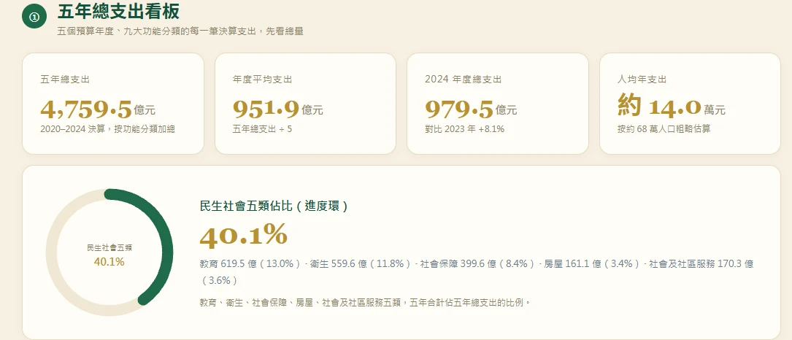
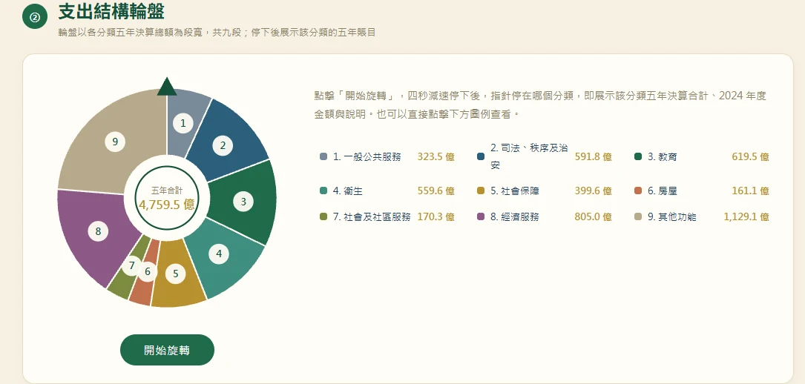
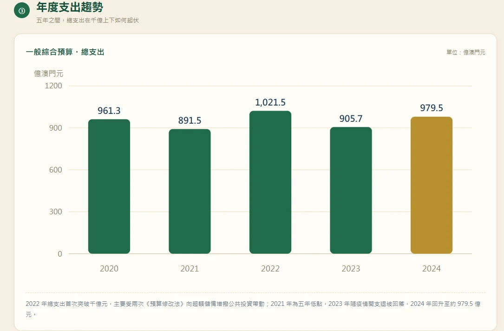
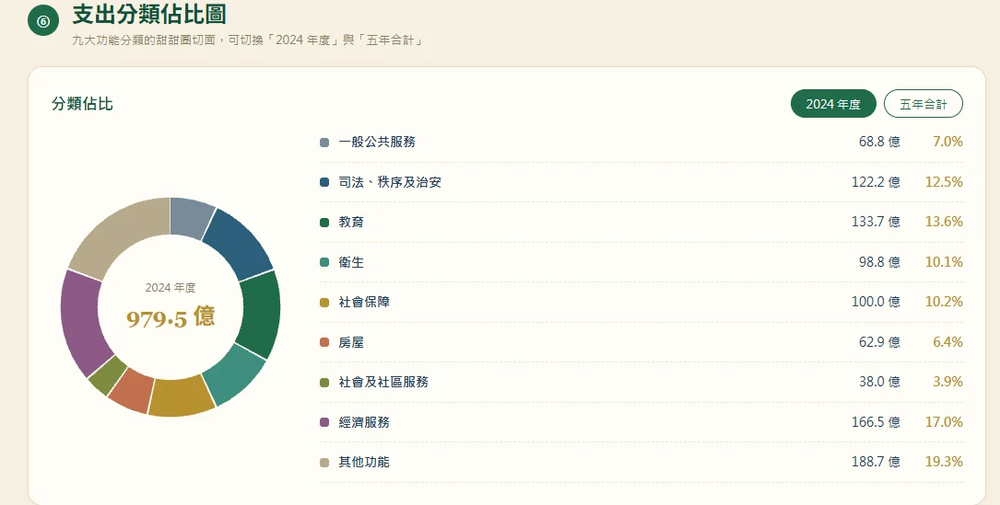

澳門財政五年決算透視：公開賬本背後的支出邏輯與產業啟示
澳門特區政府 2020–2024 年一般綜合預算決算近日完整公開，涵蓋九大功能分類、四十五條明細紀錄的「公開賬本」，不僅是一份財政收支清單，更是觀察澳門五年發展路徑的核心依據。從疫情應對到復甦回升，從民生托底到經濟多元，…
澳門政府五年賬本（2020–2024 決算）
像翻雜誌一樣讀這份報告：左頁圖表、右頁解讀，共 4 頁。亦可下載 PDF 或開啟可查可篩的互動版。

財政大盤一覽
2020–2024 五年，澳門一般綜合預算累計總支出 4,759.5 億元，年均 951.9 億元；2024 年度總支出 979.5 億元，對比 2023 年 +8.1%，回歸常態增長軌道。
按約 68 萬人口粗略估算，人均年財政支出約 14 萬元——公庫的每一筆錢，都對應著城市運作的真實脈動。
想查每一筆明細？下方可下載 PDF，或開啟可篩選的互動賬本。

錢都花在哪：九大分類
輪盤把九大功能分類攤開：「其他功能」（現金分享、醫療補貼、稅項返還等惠民措施）五年合計 1,129.1 億元；經濟服務 805.0 億元居實質政策分類之首；教育 619.5 億、衛生 559.6 億緊隨其後。
教育、衛生、社會保障、房屋、社會及社區服務五大民生類別，合計佔總支出 40.1%，是公共財政的壓艙石。
想查每一筆明細？下方可下載 PDF，或開啟可篩選的互動賬本。

五年走勢：逆週期調節
走勢呈完整周期：2021 年 891.5 億為五年低點（疫情緊縮）；2022 年兩度《預算修改法》增撥投資，衝上 1,021.5 億的唯一千億高點；2023 年特別措施退出回落至 905.7 億；2024 年復甦回升至 979.5 億。
「應急收縮 — 擴張托底 — 常態回歸」，正是澳門財政逆週期調節的完整軌跡。
想查每一筆明細？下方可下載 PDF，或開啟可篩選的互動賬本。

結構啟示：讀懂賬本找機會
房屋支出五年增長近四倍，2024 年按年大增 49.2%、增幅居九大分類之首——公屋興建與都市更新，將持續帶動建築、建材、物業上下游。
經濟服務重點從疫情救助轉向產業培育，配合「1+4」多元策略，中小企支援、旅遊推廣與數位經濟投入，就是產業界的切入點。
想查每一筆明細？下方可下載 PDF，或開啟可篩選的互動賬本。
澳門特區政府 2020–2024 年一般綜合預算決算近日完整公開，涵蓋九大功能分類、四十五條明細紀錄的「公開賬本」，不僅是一份財政收支清單，更是觀察澳門五年發展路徑的核心依據。從疫情應對到復甦回升，從民生托底到經濟多元，公庫的每一筆支出，都對應著城市運作的真實脈動。
一、財政大盤：從疫情波動到復甦穩增
2020 至 2024 年五年間，澳門一般綜合預算累計總支出達 4,759.5 億澳門元，年均支出 951.9 億元；按約 68 萬人口估算，人均年財政支出約 14 萬元。
五年間財政支出走勢呈現明顯階段性特徵：2021 年受疫情緊縮政策影響，總支出降至 891.5 億元，為五年最低點；2022 年透過兩次《預算修改法》增撥公共投資，總支出升至 1,021.5 億元，成為五年規模高點、唯一突破千億的年份；2023 年隨疫情特別措施陸續退出，支出回落至 905.7 億元；2024 年經濟復甦帶動財政回升，總支出達 979.5 億元，按年增長 8.1%，逐步回歸常態增長軌道。
整體來看，五年財政支出經歷了「應急收縮 — 擴張托底 — 常態回歸」的完整周期，既體現了公共財政的逆周期調節作用，也反映出澳門經濟從疫情衝擊中逐步修復的過程。
二、支出結構：民生優先，多元領域協同發力
從九大功能分類結構來看，民生相關投入始終是財政支出的核心。教育、衛生、社會保障、房屋、社會及社區服務五大民生類別，五年合計佔總支出的 40.1%，構成公共財政的壓艙石。
1. 基礎民生投入長期穩定
教育與衛生兩大領域常年佔據支出前列。五年間教育累計支出 619.5 億元，佔比 13.0%，十五年免費教育體系持續鞏固，學校發展與高等教育支援不斷加碼，2024 年教育支出達 133.7 億元，按年增長 5.4%。衛生領域五年累計 559.7 億元，佔比 11.8%，從疫情期間的防疫物資、核酸檢測投入，逐步轉向常態醫療服務升級，離島醫療綜合體從建設到投入營運，帶動醫療體系整體擴容。
2. 房屋與社會保障托底增效
房屋領域是近年支出增速最快的板塊，從 2020 年 12.8 億元增至 2024 年 62.9 億元，五年增長近四倍；2024 年更是按年大增 49.2%，增幅居九大分類之首，反映出公共房屋興建與維護的持續加碼。社會保障支出五年累計 399.6 億元，2024 年回升至 100.0 億元，養老金、各項津貼與社會保障基金注資穩步推進，發揮民生安全網作用。
3. 經濟服務支撐產業復甦
經濟服務類五年累計支出 805.0 億元，規模居各政策分類前列。疫情期間透過《中小企業援助計劃》穩定市場主體，後續隨旅遊業復甦，加大旅遊推廣與經濟適度多元投入，成為支撐產業恢復的重要力量。2024 年經濟服務支出達 166.5 億元，佔總支出的 17.0%，持續為中小企與新興產業提供支援。
4. 惠民機制與基建配套
「其他功能」分類 2024 年佔比 19.3%，涵蓋現金分享計劃、醫療補貼、電費補貼、稅項返還等澳門特色惠民措施，以及部門間轉移與重點基建開支。當年青茂口岸北聯檢大樓等工程投入，為跨境基礎設施完善提供了財政支撐。
此外，一般公共服務、司法秩序與治安兩類支出分別佔 7.0% 與 12.5%，保障政府運作與社會公共安全，維持城市基本運轉。
三、賬本背後的產業信號與發展啟示
財政支出的結構與走向，不僅是政府行為的體現，更隱含著產業發展的機會與城市的長期定位。從五年決算數據來看，有三個值得關注的產業信號：
第一，公共建設帶動實體產業鏈。房屋支出的高速增長，意味著公共房屋興建、舊區更新與都市更新將持續帶動建築工程、建材供應、物業服務等上下游產業。對於澳門本地工程、建造與相關服務業而言，這是確定性較高的市場空間。
第二，民生服務升級釋放市場空間。教育、衛生、社會服務等領域的財政投入持續穩定，伴隨服務升級與專業化需求，政府購買服務、民間機構合作、專業技術支援等領域的機會將逐步增加。尤其是醫療配套、教育資源優化、社區服務等細分領域，適合專業型企業參與。
第三，經濟多元導向引導新興產業。經濟服務支出的重點從疫情救助轉向產業培育，中小企支援、旅遊推廣、數位經濟相關投入，將持續為新興業態創造環境。配合澳門「1+4」經濟適度多元策略，公共財政的導向作用將進一步顯現。
同時也要看到，澳門財政支出結構仍有優化空間：當前民生與運轉類支出佔比較高，產業引導型、創新驅動型支出仍有提升潛力；未來可進一步加大對數位經濟、科技研發、文創產業的財政支援，將公共資金更多導向具有長期增長潛力的領域。
四、結語
「公開賬本」的價值，不僅在於財政透明，更在於讓社會清晰看到城市發展的資源投向。過去五年，澳門公共財政始終以民生為核心，同時兼顧經濟托底與基建配套，走過了疫情衝擊與復甦的完整周期。
站在新的節點，澳門財政可進一步強化「產業導向」的功能，將更多公共資源配置到長期增長領域，以財政槓桿帶動社會資本，共同推動經濟適度多元與產業升級。而對於產業界而言，讀懂財政賬本的邏輯，也就找到了參與城市發展的切入點。
📊 本文所有數據已做成一本互動賬本，就嵌在文章頂部——五年總支出看板、支出結構輪盤、年度趨勢與 45 條決算明細，可轉、可查、可篩選，亦可點此在新視窗開啟完整版《澳門政府五年賬本》。
數據來源：澳門立法會《一般綜合預算決算意見書》（2020–2024 各年度）、統計暨普查局、財政局。全頁金額以「億澳門元」標示，九大分類加總與官方年度總數或有約 0.002% 的進位尾差。本文為個人產業觀點，歡迎交流與探討。